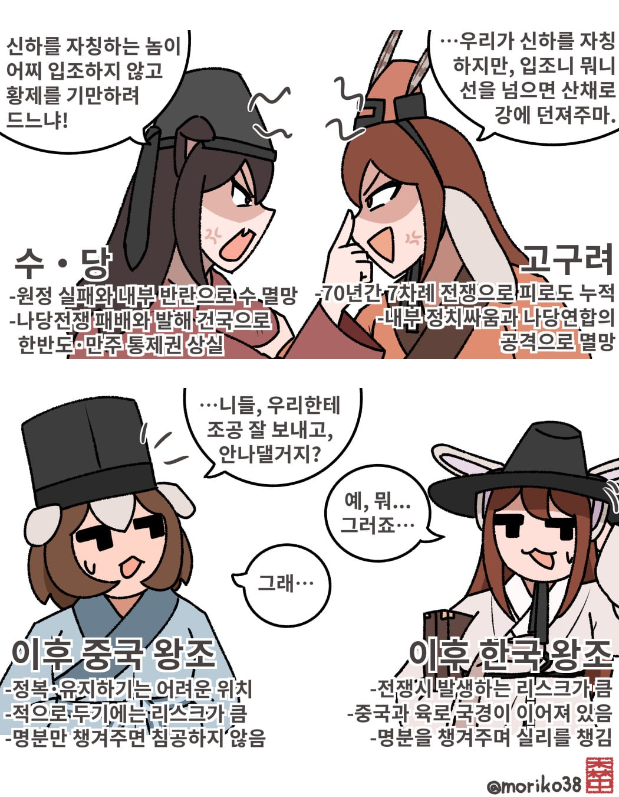

개인적 의견이기에 다른 의견 환영합니다.

개인적 의견이기에 다른 의견 환영합니다.
뭔가 한족왕조에만 해당하는거 같기도 하고
오랑캐왕조들어서면 보통 수도까지 들어와서 일단 쑥대밭은 만들긴했는데 결과는 보통 다 비슷하지않았나 원나라때 빼곤?
?나라: 할 수 있다! 나라면!
결국 모든 중국 왕조는 중국문화에 융합되버려서 비슷한 길을 걷게되더라.

하고싶다!
요동정벌!
광해군이 WWE 밑밥 다 깔아놨는데 혼자 UFC한 병신 인조 ㅠㅠ
반정으로 집권한 주제에 실권도 핏줄도 딸리던 놈이니 별 수 없지
이괄의 난으로 장수 죄다 썰어버려서 국방도 털린주제에 깝쳤으면 삼배구고두례 달게 받아라 ㅋㅋㅋㅋㅋㅋ
광해군이? 그 궁궐병 환자가?
괜히 광해군하면 중립외교가 떠오르는게 아니긴함 근데 하필 전에 고려황제덕분에 명나라 사대하는게 너무 커서... 청나라랑 명나라 사이에서 중립하는게 정치적 리스크가 너무컸음
광해군 하면 중립외교라는 것도 다 만들어진 이미지지. 막상 까보면 제대로 한것도 없음
당장 광해군의 친위 세력이 미칠듯한 친명파였는데? 오히려 중립외교 세력박살낸건 광해군이라 봐야함
광해군이? 군사비용을 궁궐에 퍼붓던 그 정신병자가?
제일 큰 이유는 중원과 반도 사이의 만주와 여진의 존재였지
공통의 적이 생기니까 친해진거임
+ 만주 유목국가 줘패기에 서로 마음맞는나라 ㅋㅋㅋ
고구려 고려가 간신히 막고 조선이 임진왜란때 충의를 보여서 이후엔 침공은 안하는듯
조선은 사실상 중립국의 포지션이었음 침략해도 딱히 먹을게 없는 나라
공격하면 할 수는 있긴한데 개빡치게 버텨서 군량털리는 신포도같은건가
가까워서 위협적이긴한데.. 국력때려박아서 전쟁하면 이기긴하겠지만 어차피 흡수도 못하고 장기점령도 못하는 땅... 그렇다고 뭐 이득이 큰 것도 없고... 그냥 2인자 자리주고 적으로만 돌리지말자
그럼 발해정도 영토까지만 좀 주든가
일본열도는 우주방어에 특화된 지형이고 한반도도 나쁘지않지
잘하자
그라입시더